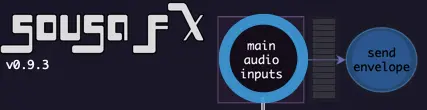

Audio IO Status
{kind=link}
{kind=link}
The menu to the right of “Input Mapping” sets the main input to SousaFX. Its options are as follows:
Silentbrass Live
from “live silentbrass L / R”, which connects to the interface’s line inputs.
Silentbrass Prerecorded
from “prerecorded silentbrass L / R”, which connects to SousaPlayback’s “silentbrass” track.
Mic Live
from “live mic”, which connects to the interface’s tuba mic input.
Mic Prerecorded
from “prerecorded mic”, which connects to SousaPlayback’s “sousa mic” track.
Mic Live Pitch Correct
from “pitch correct”, which I use with a custom algorithm on the Eventide H9000.
Input Mapping
live mic
Connects to the audio interface’s tuba mic input.
prerecorded mic
Connects to SousaPlayback’s “sousa mic” track.
live silentbrass L / R
Connects to the audio interface’s line inputs.
prerecorded silentbrass L / R
Connects to SousaPlayback’s “silentbrass” track.
drum tracks L / R
Connects to SousaPlayback’s “drum bus” track’s “Risset Ext FX” device’s “Audio To” output.
external delay receive 1 - 4, L / R
4 stereo channels of external delay receives.
phasor~ from Ableton
Connects to SousaPlayback’s “sync signal” track.
external octaver receive mono
When the Octaver is set to “ext fx”, this input receives audio from the Octaver.
Main 1-bar Phasor
This and the next 5 inputs are only needed by SousaVFX if it’s running on a different computer than SousaFX.
Phasor offset rate
VFX only.
high_freq_mod_mixed
VFX only.
low_amp_mod_mixed
VFX only.
tuba + timefx env
VFX only.
talkback_mic
Connects to the interface’s talkback mic input.
pitch correct
Connects to an external pitch correction FX.
harmonizer sustain L / R
Connects to an external harmonizer FX.
harmonizer attack L / R
Connects to an external harmonizer FX.
kick&snare L / R
Connects to SousaPlayback’s “perc 1” track to allow VFX to respond to kick and snare.
Output Mapping
The output menu sets whether the main outputs are mono or stereo.
Main L / R
connects to the interface’s main output, AKA “Front Of House” output
Monitor L / R
connects to the interface’s headphone output, AKA “monitor mix” output
Metronome Click
allows SousaFX’s metronome to be mixed independently if there’re multiple monitor mixes.
Drum Clips Risset L / R
connects to SousaPlayback’s “drum bus” track’s “Risset Ext FX” device’s “Audio From” input.
external delay send 1 - 4, L / R
4 stereo channels of external delay sends.
external octaver send mono
When the Octaver is set to “ext fx”, this output sends audio to the Octaver.
Main 1-bar Phasor
this and the following are sent to SousaVFX if it’s running on a different computer.
Phasor offset rate
VFX only.
high_freq_mod_mixed
VFX only.
low_amp_mod_mixed
VFX only.
tuba + timefx env
VFX only.
highs L/R, lows L/R, octaver L/R, timeFX L/R
For recording separate stems into SousaPlayback.